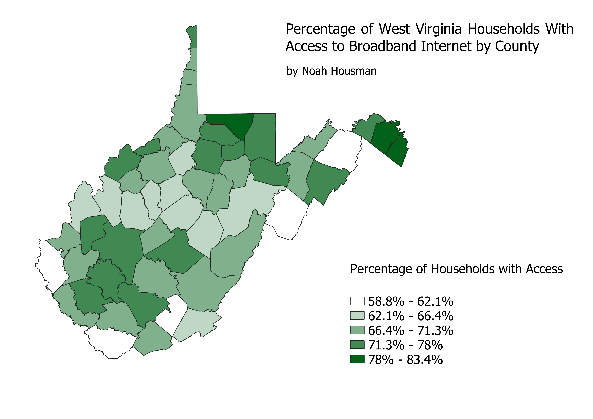

Homework 7: West Virginia Data Choropleth
Noah Housman
This map displays information about access to broadband internet in West Virginia.
I think this is an important variable to study because internet access can affect an individual's ability to receive education, hold well-paying jobs, and connect with essential resources.
There are still many individuals in Southern Appalachia who lack high-speed internet access.
This is something that's holding them back from achieving economic and social mobility.
West Virginia is a particularly interesting case because, as our energy production infrastrucure transitions away from coal, many coal miners in the state are finding themselves without jobs.
One solution to this is the transition to remote jobs, many of which are in the computer science and programming industry.
This is why internet access is important; it provides individuals with the resources they need to learn new skills and obtain employment in a rapidly evolving economy.

Data used for this project
My CSV dataset
Link to my shapefile